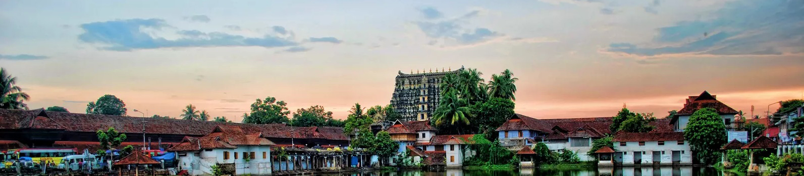

Dedicated to Lord Vishnu, the temple is a blend of the Kerala and Dravidian styles of architecture located inside the East Fort. One among rare Vishnu temples in, the presiding deity here is of Lord Vishnu reclining on Anantha the Serpent. The temple is a place for art lovers and is also known for its mural paintings and stone carvings

Trivandrum
Thiruvananthapuram, formerly known as Trivandrum, situated at Indias south-western end, is the capital of the state of Kerala. A city composite and cosmopolitan in character,it is also the largest and most populous city in the state. Bounded by the Arabian Seato its West, Thiruvananthapuram has the Indian state of Tamil Nadu to its East. Until 1991, the official name of the city was Trivandrum, but after that time, its name was reinstated by the government as Thiruvananthapuram,the original name of the city.The word Thiruvananthapuram, means the City of Lord Anantha (the serpent Shesha on whom Lord Padmanabhan or Vishnu reclines) in both Malayalam and Sanskrit languages. Earlier, Thiruvananthapuram was the capital of Travancore,a princely state founded by its ruler Marthanda Varma. And, at that time, Thiruvananthapuram emerged as a prime intellectual and artistic centre. The Evergreen city of India, the name Mahatma Gandhi gave to it, Thiruvananthapuram is described by its thrilling region of low-lying coastal hills and occupied commercial passageways. Spreading over an area of 250 sq. km. (the city and the suburbs), Thiruvananthapuram is located at an average elevation of about 16 feet above the sea level. Two major rivers flow through the city: river Karamana and the Killi.Besides being the political nerve centre of the state and home to a number of Government offices (both central and state), companies and organizations,Thiruvananthapuram also houses many premier educational institutions including the Kerala University. Thiruvananthapuram is also home to India’s first IT park, Technopark, which was established in 1995. Technopark, which has emerged as Indias largest IT Park and the third largest in Asia, is home to many dream employers of IT professionals including TCS and Infosys. With numerous historic monuments, a far-reaching shoreline giving it some of the most beautiful beaches, backwater stretches and a rich cultural heritage, Thiruvananthapuram is a popular tourist destination in Kerala and in India.